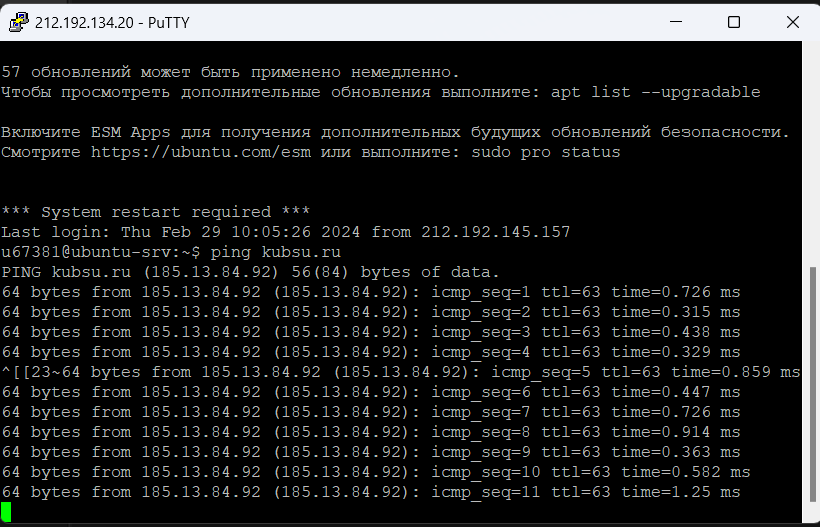
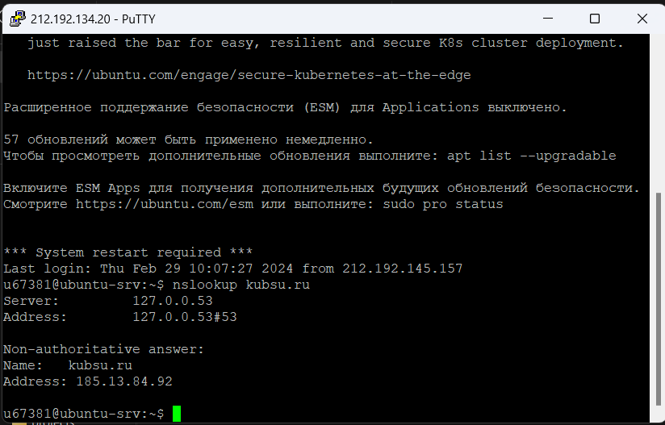
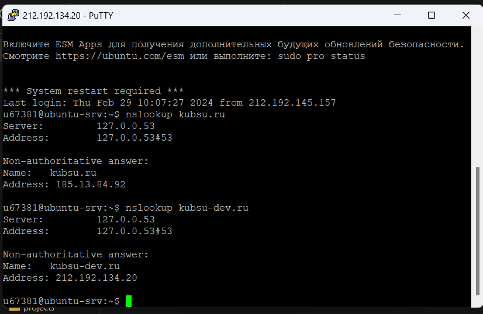
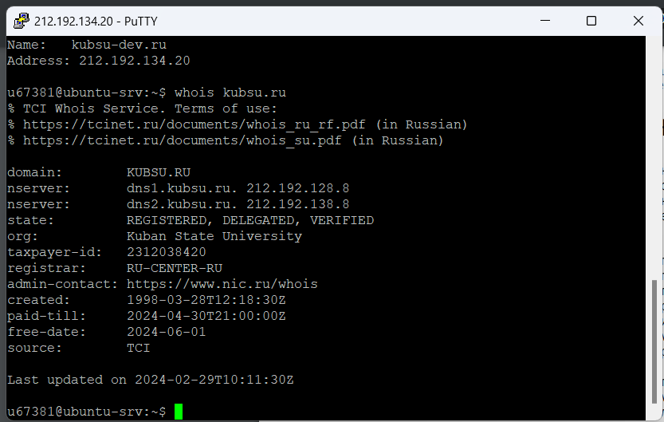
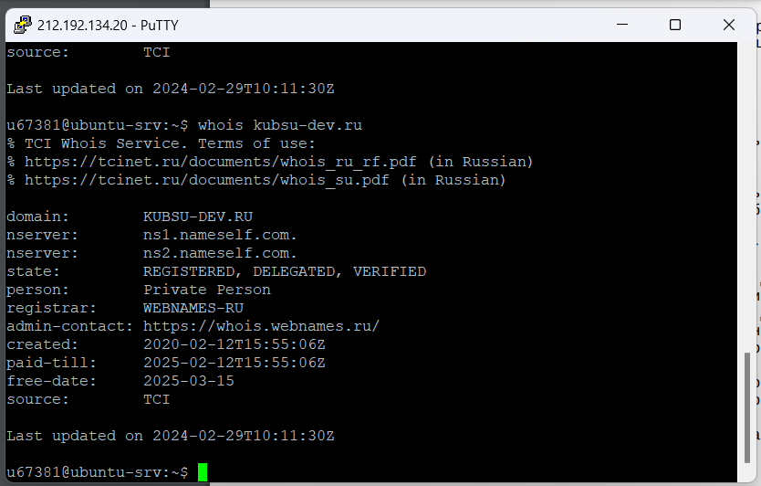
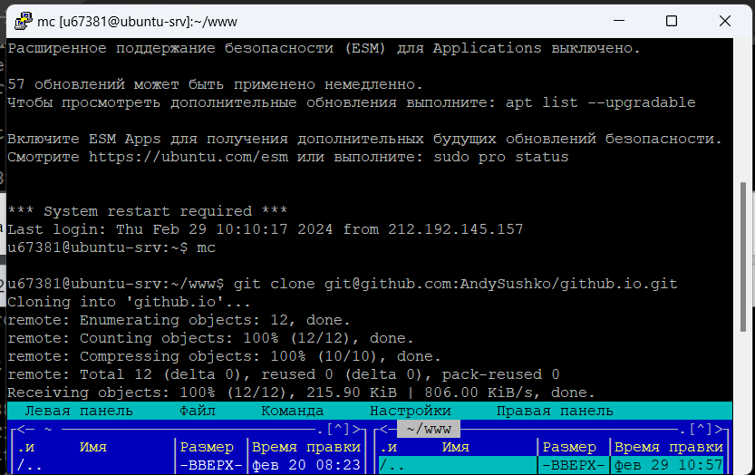
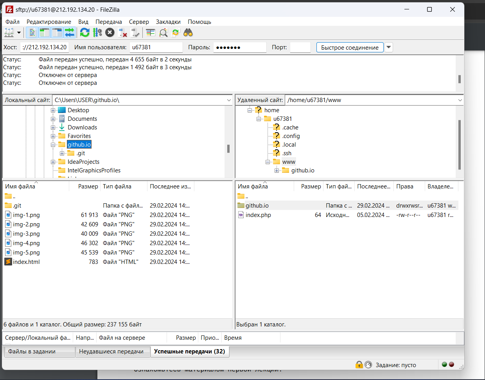
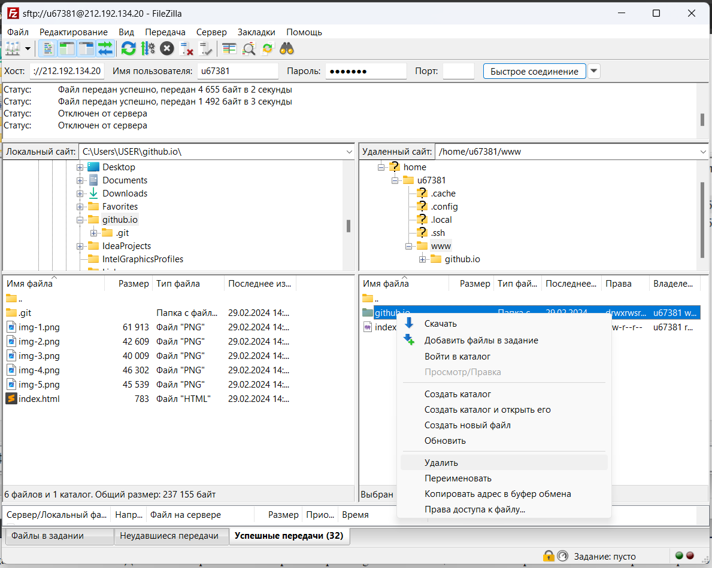
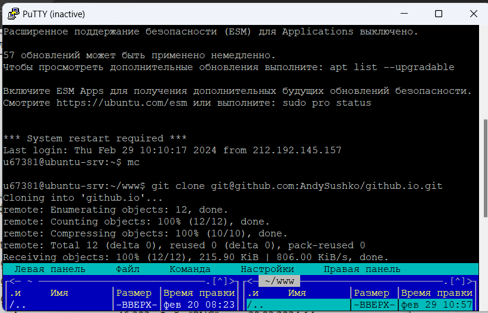

1. IP-адрес веб-сервера kubsu.ru
2. A-записи и MX-записи домена kubsu.ru
Запись A (address) — одна из ключевых ресурсных записей Интернета. Она нужна для связи домена с IP-адресом сервера. Пока не прописана А-запись, ваш сайт не будет работать. Когда вы вводите название сайта в адресную строку браузера, именно по А-записи DNS определяет, с какого сервера нужно открывать ваш сайт.
MX-запись — запись, отвечающая за сервер, через который будет работать почта. Записи MX критически важны для работы почты. Благодаря им отправляющая сторона «понимает», на какой сервер нужно отправлять почту для вашего домена.
3. A-записи и MX-записи домена kubsu-dev.ru
4. Дата регистрации домена kubsu.ru
5. Дата регистрации домена kubsu-dev.ru
6. С помощью команды keygen скачиваем на сервер в каталог .ssh, затем с помощью Filezilla скачиваем и узнаем ключи домена и добавляем их в настройки репозитария
7. С помощью SSH склонировать репозитарий со скриншотами и страницей в каталог 'www'
8. Скриншот в FileZila после копирования на локальный компьютер файлов задания из каталога 'www'
9. Удаление файлов задания из каталога 'www'. Добавление скриншотов 6-7 в репозитарий на github
10. С помощью SSH склонировать обновленный репозитарий со скриншотами и страницей в каталог 'www'
